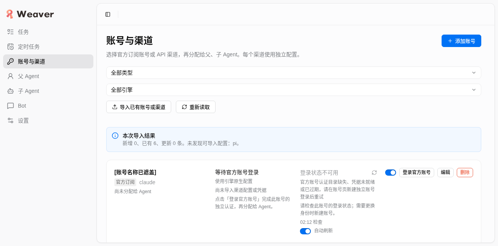

2026-10-25 06:14–06:17 UTC · 独立冻结验收 · 机器结果
源码摘要 0c424a5506a69109cfbac6c75ef71624caf8ade40751dd57c57e231ee5fc3be2；HEAD 294b7f91e974e0a4dc134fbe398810207198ebdc。前后文件 hash 一致。真实测试地址 http://127.0.0.1:4738；生产 4737 未部署本次修复。一次性 4740 服务已停止。
A/B 初始均为 revision 0、7 个占位渠道、0 个 secret。各次来源目录留空，未勾选替换。表中的计数为实际回执；空 failures 全部保留在附件。全部导入的 notFound 仅为 Pi。重复操作保持 revision，符合本版本实际幂等行为。
| 环境 / 引擎 | 状态 | 新增 / 已有 / 更新 | revision | 渠道数 | 耗时 | 请求数 / HTTP |
|---|---|---|---|---|---|---|
| Fresh A / claude | 通过 | 1 / 0 / 0 | 0 → 1 | 8 | 39 ms | 1 / 200 |
| Fresh A / claude | 通过 | 0 / 1 / 0 | 1 → 1 | 8 | 44 ms | 1 / 200 |
| Fresh B / all | 通过 | 6 / 0 / 0 | 0 → 1 | 13 | 16102 ms | 1 / 200 |
| Fresh B / claude | 通过 | 0 / 1 / 0 | 1 → 1 | 13 | 51 ms | 1 / 200 |
| 持久 4738 / claude | 通过 | 0 / 1 / 0 | 47 → 47 | 18 | 73 ms | 1 / 200 |
| 持久 4738 / all | 通过 | 0 / 6 / 0 | 47 → 47 | 18 | 6051 ms | 1 / 200 |
A 落库 1 个真实 secret，凭据副本与来源字节相同，私有认证根实际位于 A。B 落库 6 个真实 secret，对应 6 个新增 metadata；5 个订阅认证根实际位于 B。dsh 为 API 渠道，key 存于 B 私有 SQLite，无持久 authDir；因此 B 的 hasCredentials=5，另有 dsh hasApiKey=true。Claude 新增账号 hasCredentials=true。
4738 初始与结束均 revision 47、18 个渠道、11 个 secrets。默认 Claude existing=1；默认全部 existing=6；无新增和更新。原有 secret 正文、私有根路径及所有根内文件字节 hash 均保持一致。页面显示完整结果并关闭弹窗，未以后台提交代替 UI 成功。

只调用一次 runtime sayHi/sayHiResult，sonnet / medium，ok=true，精确回复 hi，原生报告模型 claude-sonnet-5-5，耗时 4,940 ms。/proc 实际观察 CLAUDE_CONFIG_DIR、CLAUDE_SECURESTORAGE_CONFIG_DIR 同指 A 私有根，ANTHROPIC_CONFIG_DIR 指该根的 anthropic 子目录。调用前后以及清理前，Claude 全局凭据和 metadata 字节相等。
共享 prepareChannelRun 与 nativeEnvironment 也实际构造核对上述 selectors。登录环境只做构造核验，未启动新登录进程；Hello 的进程级证据真实存在。没有 auth status/login/logout/refresh、额外模型矩阵或重发。
旧首次导入专项失败和前轮最终报告保留原时点事实：旧默认 Claude 曾新增但未就绪；旧全部导入曾 15 秒超时后后台才落库。当前 A/B 是修复后的全新库、真实默认来源首次 UI 复验，明确覆盖这两条路径。
前轮摘要 1c092161ceed7008012cdf22548f919e919033dc24d6df0601ed867be7117f88 的报告于 05:53:56 UTC 生成，已有滚动、草稿继续/放弃、dsh 配置保存及五官方入口 UI 证据。本轮只针对导入期限、Claude 来源校验与私有 selector 变动复验，未重复大 UI 矩阵。
分时点引擎摘要及原引擎证据保留五种旧导入账号真实 hi（Grok 纠偏后通过）；正式 Codex 任务 ac722880-d7b1-4886-842d-bc69047846b3 的 real/completed、finalized/ack/accepted 来自较早时点，不计为本轮新执行。
owner 同摘要 npm run check：2,184 tests，2,152 pass，32 skipped，0 fail；typecheck/build 通过（06:12:18–06:14:34 UTC）。该结果由 owner 提供，本 worker 未重跑，不能代替 UI/OAuth 验收。
浏览器累计 console：6 debug、3 info、1 log，无 error；JS 错误 0。网络记录有一次自有 A 关闭时的 503（/api/rpc command），另 1 条无状态，导入 mutation 全为 200。不存在导入 TIMEOUT。最小接线最初遇到 CJS helper 扩展名和 Unix socket 路径上限，均仅在自有 scratch 解决；/proc fd 别名实际解析到授权 A/B 根，没有产品改动。
自有资源清理：已完成。A/B scope 已停，两个数据库、真实 auth 副本及 cache 已删。Chrome/profile、独立 Herdr workspace 的最终外部核验见 cleanup.json。生产 PID 1109320、持久 4738 PID 1381285 保留；未执行 prepare/reset/cleanup、删除账号或解除限额。
报告 file / 390px / print / links 实查状态：pass。见 报告可读性证据。所有必要结论直接显示；无需 JavaScript、CDN 或在线服务。
归档只保留安全结果、布尔核验、必要截图和计数；不含完整 policy、HAR、原始认证、token 摘要、邮箱、设备码或 URL query。真实源未写入，未提交、推送或委派。